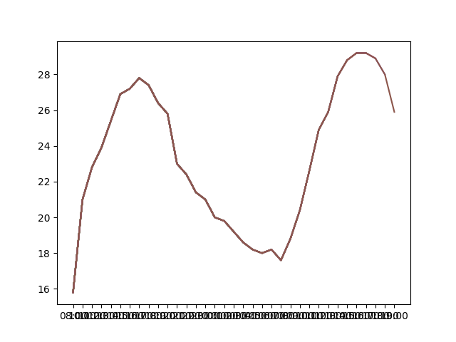

 
<table border="1"><tr><th>data</th><td><table border="1"><thead><tr><th>date</th><th>hour</th><th>weather</th><th>visibility</th><th>temp</th><th>unk</th><th>humidity</th><th>wind</th><th>pressure</th></tr></thead><tbody><tr><td>03-Abril-2021</td><td>08:00</td><td>Algo nublado con banco delgado de niebla</td><td>8 km</td><td>15.8</td><td>No se calcula</td><td>92.0</td><td>Sur  3</td><td>1014.5</td></tr><tr><td>03-Abril-2021</td><td>10:00</td><td>Despejado</td><td>15 km</td><td>21.0</td><td>No se calcula</td><td>71.0</td><td>Noreste  11</td><td>1014.8</td></tr><tr><td>03-Abril-2021</td><td>11:00</td><td>Despejado</td><td>15 km</td><td>22.8</td><td>No se calcula</td><td>66.0</td><td>Este  5</td><td>1014.6</td></tr><tr><td>03-Abril-2021</td><td>12:00</td><td>Algo nublado</td><td>15 km</td><td>23.9</td><td>No se calcula</td><td>61.0</td><td>Noreste  7</td><td>1014.2</td></tr><tr><td>03-Abril-2021</td><td>13:00</td><td>Algo nublado</td><td>15 km</td><td>25.4</td><td>No se calcula</td><td>55.0</td><td>Este  5</td><td>1013.6</td></tr><tr><td>03-Abril-2021</td><td>14:00</td><td>Algo nublado</td><td>15 km</td><td>26.9</td><td>27.3</td><td>49.0</td><td>Noreste  5</td><td>1012.8</td></tr><tr><td>03-Abril-2021</td><td>15:00</td><td>Algo nublado</td><td>15 km</td><td>27.2</td><td>26.4</td><td>42.0</td><td>Noreste  13</td><td>1012.0</td></tr><tr><td>03-Abril-2021</td><td>16:00</td><td>Algo nublado</td><td>15 km</td><td>27.8</td><td>No se calcula</td><td>36.0</td><td>Sudeste  9</td><td>1011.4</td></tr><tr><td>03-Abril-2021</td><td>17:00</td><td>Algo nublado</td><td>15 km</td><td>27.4</td><td>No se calcula</td><td>38.0</td><td>Este  7</td><td>1011.3</td></tr><tr><td>03-Abril-2021</td><td>18:00</td><td>Despejado</td><td>15 km</td><td>26.4</td><td>No se calcula</td><td>39.0</td><td>Sur  9</td><td>1011.3</td></tr><tr><td>03-Abril-2021</td><td>19:00</td><td>Despejado</td><td>15 km</td><td>25.8</td><td>No se calcula</td><td>43.0</td><td>Calma</td><td>1011.4</td></tr><tr><td>03-Abril-2021</td><td>20:00</td><td>Despejado</td><td>15 km</td><td>23.0</td><td>No se calcula</td><td>58.0</td><td>Sur  5</td><td>1011.8</td></tr><tr><td>03-Abril-2021</td><td>21:00</td><td>Algo nublado</td><td>15 km</td><td>22.4</td><td>No se calcula</td><td>62.0</td><td>Sur  7</td><td>1012.2</td></tr><tr><td>03-Abril-2021</td><td>22:00</td><td>Algo nublado</td><td>15 km</td><td>21.4</td><td>No se calcula</td><td>68.0</td><td>Calma</td><td>1012.8</td></tr><tr><td>03-Abril-2021</td><td>23:00</td><td>Despejado</td><td>15 km</td><td>21.0</td><td>No se calcula</td><td>73.0</td><td>Calma</td><td>1012.8</td></tr><tr><td>04-Abril-2021</td><td>00:00</td><td>Despejado</td><td>15 km</td><td>20.0</td><td>No se calcula</td><td>77.0</td><td>Sudeste  5</td><td>1012.6</td></tr><tr><td>04-Abril-2021</td><td>01:00</td><td>Algo nublado</td><td>15 km</td><td>19.8</td><td>No se calcula</td><td>76.0</td><td>Calma</td><td>1012.4</td></tr><tr><td>04-Abril-2021</td><td>02:00</td><td>Despejado</td><td>15 km</td><td>19.2</td><td>No se calcula</td><td>75.0</td><td>Calma</td><td>1012.1</td></tr><tr><td>04-Abril-2021</td><td>03:00</td><td>Algo nublado</td><td>15 km</td><td>18.6</td><td>No se calcula</td><td>82.0</td><td>Noreste  9</td><td>1012.0</td></tr><tr><td>04-Abril-2021</td><td>04:00</td><td>Algo nublado</td><td>15 km</td><td>18.2</td><td>No se calcula</td><td>83.0</td><td>Calma</td><td>1012.0</td></tr></tbody></table></td></tr></table>